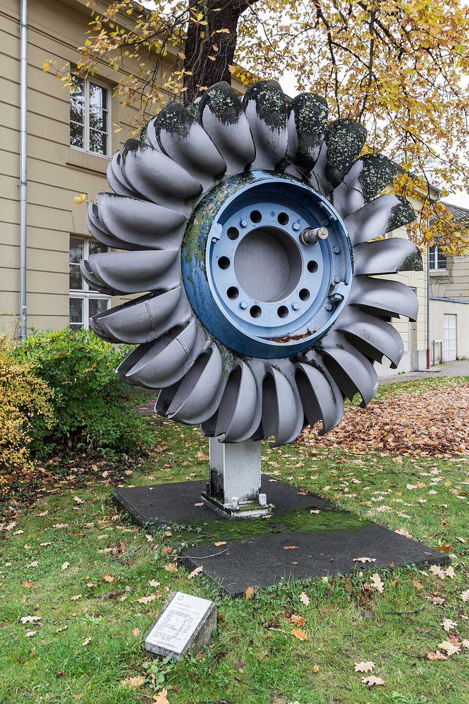

Cómo se le da y se le quita energía a un fluido
Una bomba y una turbina son, en el fondo, la misma idea recorrida en sentidos opuestos. La bomba toma trabajo de un eje que gira y se lo entrega al fluido. La turbina toma energía del fluido y se la entrega a un eje. Las dos conversan con el fluido del mismo modo: a través de álabes que cambian cómo gira.
Çengel y Cimbala clasifican estas máquinas en dos categorías amplias: una bomba es cualquier máquina de fluidos que agrega energía a un fluido, y una turbina es la que se la extrae. Dentro de cada categoría hay máquinas de desplazamiento positivo y máquinas dinámicas [1]. Las dinámicas, llamadas turbomáquinas, dirigen el fluido con álabes fijados a una pieza que gira [2].
La herramienta central sale de la conservación del momento angular. El libro de Çengel y Cimbala la considera la ecuación más útil para el diseño preliminar [1]. Si una masa de fluido entra girando de una manera y sale girando de otra, el rotor tuvo que hacerle un torque. Las notas de mecánica de fluidos de la Universidad Nacional de Taiwán la escriben así, para una máquina ideal [2]:
El término clave es el producto U·ut: la velocidad del álabe por lo que el fluido gira en esa misma dirección. Combinando esta ecuación con el teorema de Bernoulli en el marco que gira con el rotor, se obtiene el resultado que justifica todo: en una bomba, la energía entregada por unidad de peso es igual al aumento de carga del flujo; en una turbina, la energía obtenida es igual a la caída de carga [2].
Un ejemplo sencillo: un rodete de 10 cm de radio a 1450 vueltas por minuto tiene una velocidad periférica U₂ de unos 15 m/s. Si el agua entra sin girar y sale con ut2 = 0,7 U₂, la carga ideal es H = U₂ ut2/g ≈ 16 metros (un cálculo propio, con valores elegidos como ejemplo). Eso muestra por qué las bombas centrífugas giran rápido: la carga crece con el cuadrado de la velocidad del rodete.
Empujar una hamaca: la energía que le das a una hamaca depende de cuánto la acompañás en su movimiento. Un álabe hace algo parecido: lo que cuenta es la componente del movimiento del fluido en la dirección en que se mueve el álabe, no toda su velocidad.
Una máquina real tiene fricción y pérdidas en el flujo. Por eso se define una potencia hidráulica, Ẇh = ρ g Q H, y dos rendimientos que son inversos en su forma [1][2]:
Subir 10 litros de agua por segundo a 20 metros requiere casi 2 kW de potencia hidráulica. Con un rendimiento supuesto del 70 %, el motor debería entregar unos 2,8 kW (un cálculo propio). A esos 20 metros hay que sumarles la pérdida de carga de la cañería: la bomba paga el desnivel y también la fricción.
El Departamento de Energía de Estados Unidos explica que la turbina se elige según la carga (el desnivel) y el caudal del sitio, y divide las turbinas hidráulicas en dos tipos principales [3]:
Las de reacción generan potencia por la acción combinada de la presión y el agua en movimiento, con el rodete metido directamente en la corriente. Se usan en general en sitios de carga baja y caudal alto [3]. Entre ellas está la Francis, inventada por James Francis en 1849, con palas fijas y habitual en cargas medias y altas [3]; y la Kaplan, una hélice con palas y compuertas ajustables, desarrollada por Viktor Kaplan en 1919, lo que le da un rango de operación más amplio [3].
Las de acción usan la velocidad del agua: un chorro golpea cada cuchara del rodete y el agua sale a presión atmosférica [3]. Entre ellas, la Pelton, inventada por Lester Pelton en la década de 1870, se usa en general en cargas muy altas y caudales bajos [3].
Un número para elegir máquina: la velocidad específica de una bomba, NSp = ω Q1/2 / (gH)3/4, combina velocidad de giro, caudal y carga en un número sin unidades, y existe una versión análoga para turbinas. Sirve para la selección preliminar del tipo de máquina más apropiado para cada aplicación [1]. Las leyes de escala permiten además diseñar máquinas nuevas geométricamente semejantes a otras ya existentes [1], como se hace con cualquier número adimensional.

A la entrada de una bomba, la presión es baja. Si baja demasiado, aparecen burbujas de vapor: es la cavitación, cuyo colapso daña los álabes [4]. Para evitarla, se define la altura neta positiva de succión, NPSH por su sigla en inglés, y se exige que supere un valor mínimo [2]:
Esa exigencia explica un límite conocido (un razonamiento propio): una bomba instalada arriba del nivel del agua no puede aspirar desde cualquier altura, porque la presión a su entrada no puede bajar de la de vapor. Aspirar no es tirar del agua: es dejar que la presión de afuera la empuje hacia el vacío relativo.
Bombas y turbinas intercambian energía con un fluido cambiando su momento angular. La ecuación de Euler dice cuánta energía se transfiere, los rendimientos dicen cuánta se pierde y la carga y el caudal disponibles deciden el tipo de máquina: una Pelton en la montaña, una Kaplan en un río de llanura. Y en todas aparece el mismo límite: no dejar que la presión caiga hasta la de vapor.
Pregunta para la comunidad: ¿Hasta qué altura máxima teórica podría aspirar agua una bomba al nivel del mar, por más potente que sea? ¿Y por qué se puede subir agua mucho más alto si la bomba se instala abajo?